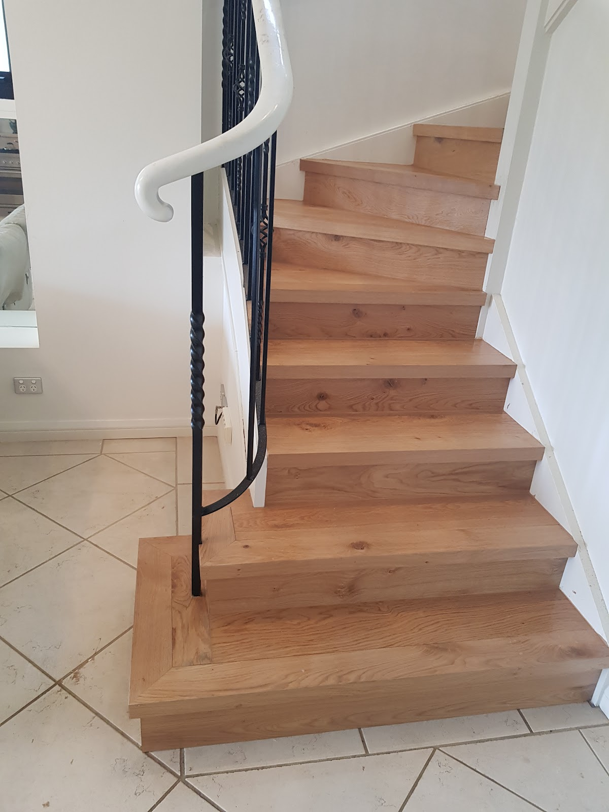
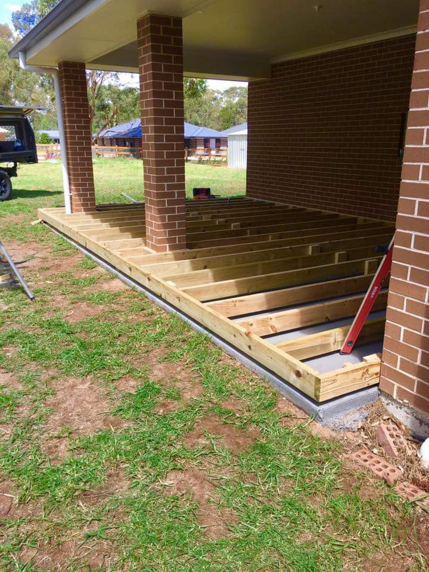
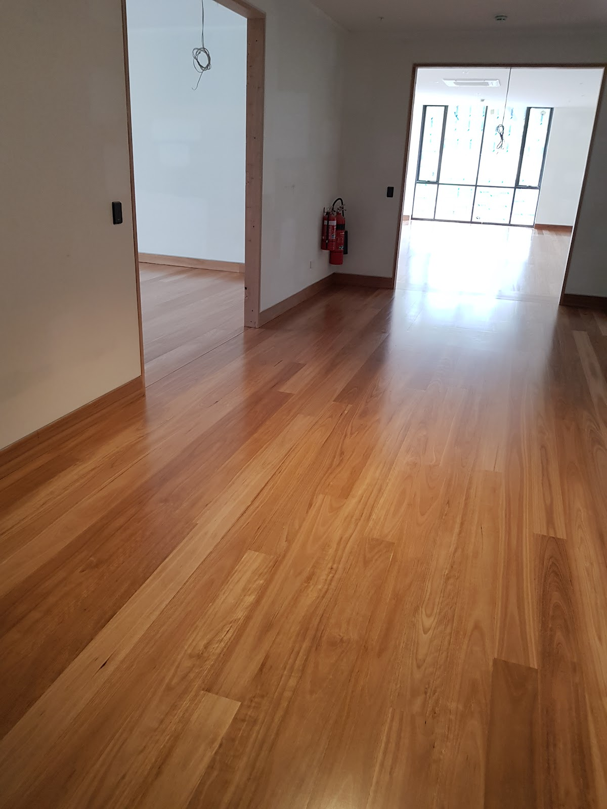
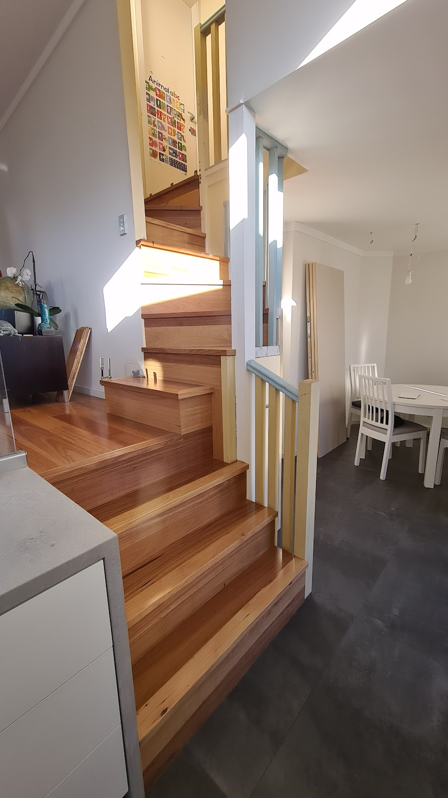

Design-led carpentry and renovation across Sydney's inner west — timber staircases, decks, floors and full fit-outs, with honest advice and a standard of work people come back for.
Real jobs across the inner west — staircases, decks and floors, built and finished on site.

Solid-timber stairs, treads and balustrades — measured, built and finished in place. The piece everyone notices the moment they walk in.

Hardwood decks and traditional Sydney balconies built to handle the weather and the years — structurally sound, properly detailed, beautifully finished.

Supply, lay, sand and finish — warm timber floors done the right way, so they look right and wear well for decades.

Bathrooms, kitchens and whole-home carpentry — design solutions offered up front and the job managed end to end, without the fuss.
Solid-timber stairs built and finished on site.
Hardwood decks and traditional Sydney balconies.
Lay, sand and finish — supply or your own.
Carpentry-led bathroom fit-outs, managed end to end.
Joinery, cabinetry and full kitchen rebuilds.
Window installs, doors and bespoke timber joinery.
Measure twice.
Build once.
Don't leave until it's right.
TopDraw is Simon and a small inner-west crew who'd rather do one job properly than three in a rush. Experienced across traditional Sydney balconies and modern joinery alike — known for honest advice, good design solutions, and a standard of work that keeps clients coming back. A straight shooter, true to his word.
4.9★ from 14 reviews — here's what a few of them said.
"Delighted with the work Simon has done. Fast and very efficient. Helpful with design and a great standard of work — I'll use him again and highly recommend him."
"A great professional carpenter with a vast amount of experience renovating traditional Sydney balconies. Simon was fun to work with and offered good design solutions, ensuring the best possible outcome."
"Simon is a straight shooter who is true to his word. He delivers the goods on every project he undertakes and takes great pride in his work — which benefits the customer."
"I've had Simon and his team complete multiple jobs for me now — I would not consider anyone else. They always go above and beyond to get the job done."
"Needed a few jobs done and after being referred to Simon I was glad I used him. Quick and easy, met my expectations and happy to keep using him. 10/10."
Call for a quote or to talk through your job — you'll get a straight answer and honest advice, not a sales pitch.